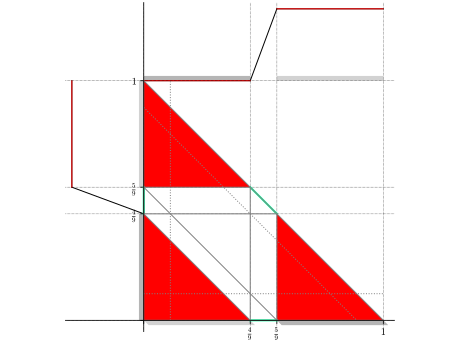
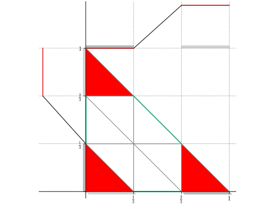
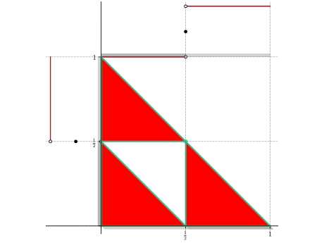
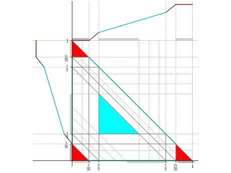
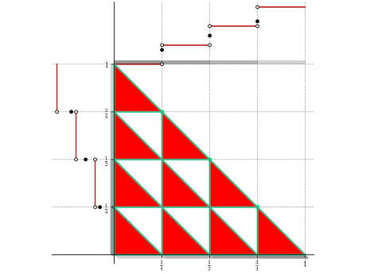
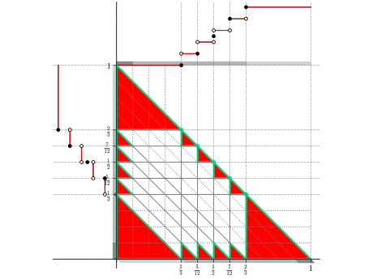
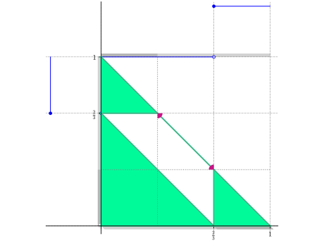
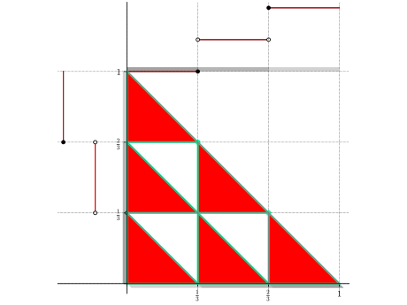
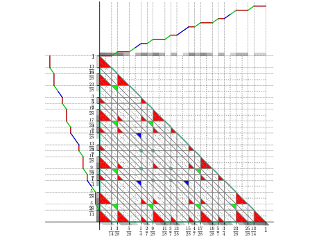
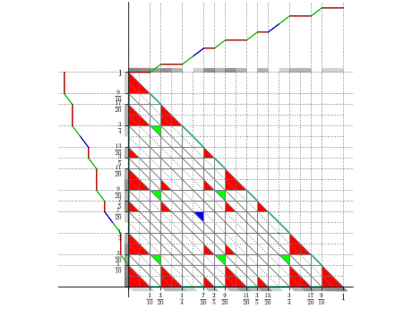

Code for classical and general dual-feasible functions¶
-
cutgeneratingfunctionology.dff.LinearCodeFromVectorSpace¶
-
cutgeneratingfunctionology.dff.addition_names¶ tuple() -> empty tuple tuple(iterable) -> tuple initialized from iterable’s items
If the argument is a tuple, the return value is the same object.
-
cutgeneratingfunctionology.dff.channels¶ Index of channels
Channels in Sage implement the information theoretic notion of transmission of messages.
The
channelsobject may be used to access the codes that Sage can build.Note
To import these names into the global namespace, use:
sage: from sage.coding.channels_catalog import *
-
cutgeneratingfunctionology.dff.codes¶ Index of code constructions
The
codesobject may be used to access the codes that Sage can build.ParityCheckCode()Parity check codes CyclicCode()Cyclic codes BCHCode()BCH Codes GeneralizedReedSolomonCode()Generalized Reed-Solomon codes ReedSolomonCode()Reed-Solomon codes BinaryReedMullerCode()Binary Reed-Muller codes ReedMullerCode()q-ary Reed-Muller codes HammingCode()Hamming codes GolayCode()Golay codes GoppaCode()Goppa codes DuadicCodeEvenPair()Duadic codes, even pair DuadicCodeOddPair()Duadic codes, odd pair QuadraticResidueCode()Quadratic residue codes ExtendedQuadraticResidueCode()Extended quadratic residue codes QuadraticResidueCodeEvenPair()Even-like quadratic residue codes QuadraticResidueCodeOddPair()Odd-like quadratic residue codes QuasiQuadraticResidueCode()Quasi quadratic residue codes (Requires GAP/Guava) ToricCode()Toric codes WalshCode()Walsh codes from_parity_check_matrix()Construct a code from a parity check matrix random_linear_code()Construct a random linear code RandomLinearCodeGuava()Construct a random linear code through Guava (Requires GAP/Guava) SubfieldSubcode()Subfield subcodes ExtendedCode()Extended codes PuncturedCode()Puncturedcodes Note
To import these names into the global namespace, use:
sage: from sage.coding.codes_catalog import *
-
cutgeneratingfunctionology.dff.compute_value(pi, b, la, x)¶
-
cutgeneratingfunctionology.dff.conversion_from_DFF_to_GJ(phi)¶
-
cutgeneratingfunctionology.dff.conversion_from_GJ_to_DFF(pi, la=0, left=0, right=1, n=1)¶
-
cutgeneratingfunctionology.dff.crystals¶ Catalog Of Crystals
Let \(I\) be an index set and let \((A,\Pi,\Pi^\vee,P,P^\vee)\) be a Cartan datum associated with generalized Cartan matrix \(A = (a_{ij})_{i,j\in I}\). An abstract crystal associated to this Cartan datum is a set \(B\) together with maps
\[e_i,f_i \colon B \to B \cup \{0\}, \qquad \varepsilon_i,\varphi_i\colon B \to \ZZ \cup \{-\infty\}, \qquad \mathrm{wt}\colon B \to P,\]subject to the following conditions:
- \(\varphi_i(b) = \varepsilon_i(b) + \langle h_i, \mathrm{wt}(b) \rangle\) for all \(b \in B\) and \(i \in I\);
- \(\mathrm{wt}(e_ib) = \mathrm{wt}(b) + \alpha_i\) if \(e_ib \in B\);
- \(\mathrm{wt}(f_ib) = \mathrm{wt}(b) - \alpha_i\) if \(f_ib \in B\);
- \(\varepsilon_i(e_ib) = \varepsilon_i(b) - 1\), \(\varphi_i(e_ib) = \varphi_i(b) + 1\) if \(e_ib \in B\);
- \(\varepsilon_i(f_ib) = \varepsilon_i(b) + 1\), \(\varphi_i(f_ib) = \varphi_i(b) - 1\) if \(f_ib \in B\);
- \(f_ib = b'\) if and only if \(b = e_ib'\) for \(b,b' \in B\) and \(i\in I\);
- if \(\varphi_i(b) = -\infty\) for \(b\in B\), then \(e_ib = f_ib = 0\).
This is a catalog of crystals that are currently implemented in Sage:
AffineCrystalFromClassicalAffineCrystalFromClassicalAndPromotionAffineFactorizationAffinizationOfAlcovePathsFastRankTwoGeneralizedYoungWallsHighestWeightInducedKacModuleKirillovReshetikhinKleshchevPartitionsKyotoPathModelLettersLSPathsMinimajNakajimaMonomialsOddNegativeRootsProjectedLevelZeroLSPathsRiggedConfigurationsShiftedPrimedTableauxSpinsSpinsPlusSpinsMinusTableaux
Subcatalogs:
- Catalog Of Crystal Models For B(\infty)
- Catalog Of Elementary Crystals
- Catalog Of Crystal Models For Kirillov-Reshetikhin Crystals
Functorial constructions:
TESTS:
sage: 'absolute_import' in dir(crystals) False
-
cutgeneratingfunctionology.dff.delta_pi_dff_general(fn, x, y, xeps, yeps, zeps)¶
-
cutgeneratingfunctionology.dff.delta_pi_for_nonmodule_one(fn, x, y)¶
-
cutgeneratingfunctionology.dff.delta_pi_general_dff(fn, x, y, xxx_todo_changeme=(0, 0, 0))¶
-
cutgeneratingfunctionology.dff.extremality_test_continuous_dff(fn, show_plots=False)¶ DFF extremality test, continuous case.
-
cutgeneratingfunctionology.dff.extremality_test_dff(f)¶ Test whether a piecewise linear cDFF is extreme.
-
cutgeneratingfunctionology.dff.extremality_test_general_dff(fn, show_plots=False)¶ DFF extremality test, discontinuous case.
-
cutgeneratingfunctionology.dff.find_0index(phi)¶ find the index of 0 in the breakpoints.
-
cutgeneratingfunctionology.dff.find_epsilon_interval_continuous_dff(fn, perturb)¶ Compute the interval [minus_epsilon, plus_epsilon] such that (fn + epsilon * perturb) is superadditive for epsilon in this interval. Assumes that fn is superadditive. If one of the epsilons is 0, the function bails out early and returns 0, 0.
-
cutgeneratingfunctionology.dff.find_epsilon_interval_general_dff(fn, perturb)¶
-
cutgeneratingfunctionology.dff.finite_dynamical_systems¶ Catalog of discrete dynamical systems
This module contains constructors for several specific discrete dynamical systems. These are accessible through
sage.dynamics.finite_dynamical_system_catalog.or just through \(finite_dynamical_systems.\) (type either of these in Sage and hittabfor a list).AUTHORS:
- Darij Grinberg, Tom Roby (2018): initial version
-
cutgeneratingfunctionology.dff.game_theory¶ Catalog Of Games
TESTS:
sage: 'absolute_import' in dir(game_theory) False
-
cutgeneratingfunctionology.dff.generate_additive_vertices_continuous_dff(fn)¶
-
cutgeneratingfunctionology.dff.generate_additive_vertices_dff(fn)¶
-
cutgeneratingfunctionology.dff.generate_additive_vertices_general_dff(fn)¶
-
cutgeneratingfunctionology.dff.generate_additivity_equations_dff_continuous(function, symbolic, field)¶
-
cutgeneratingfunctionology.dff.generate_additivity_equations_general_dff(function, symbolic, field)¶
-
cutgeneratingfunctionology.dff.generate_maximal_additive_faces_continuous_dff(function)¶ EXAMPLES:
sage: from cutgeneratingfunctionology.dff import * sage: logging.disable(logging.INFO) # Suppress output in automatic tests. sage: h=phi_bj_1(3/2) sage: generate_maximal_additive_faces_continuous_dff(h) [<Face ([0, 1/3], [0, 1/3], [0, 1/3])>, <Face ([0], [1/3, 2/3], [1/3, 2/3])>, <Face ([1/3, 2/3], [0], [1/3, 2/3])>, <Face ([0, 1/3], [2/3, 1], [2/3, 1])>, <Face ([2/3, 1], [0, 1/3], [2/3, 1])>, <Face ([1/3, 2/3], [1/3, 2/3], [1])>]
-
cutgeneratingfunctionology.dff.generate_maximal_additive_faces_dff(fn)¶
-
cutgeneratingfunctionology.dff.generate_maximal_additive_faces_general_dff(function)¶ Compute the additive faces of a cDFF.
General code suitable for the continuous and discontinuous case.
TESTS:
Make sure that the face corresponding to the symmetry condition is included:
sage: from cutgeneratingfunctionology.dff import * sage: logging.disable(logging.INFO) # Suppress output in automatic tests. sage: h = phi_bj_1(3/2) sage: generate_maximal_additive_faces_general_dff(h) [..., <Face ([1/3, 2/3], [1/3, 2/3], [1])...>]
-
cutgeneratingfunctionology.dff.generate_nonsuperadditive_vertices(fn)¶
-
cutgeneratingfunctionology.dff.generate_nonsuperadditive_vertices_continuous(fn, reduced=True)¶
-
cutgeneratingfunctionology.dff.generate_nonsuperadditive_vertices_general(fn)¶
-
cutgeneratingfunctionology.dff.generate_nonsymmetric_vertices_continuous_dff(fn)¶
-
cutgeneratingfunctionology.dff.generate_nonsymmetric_vertices_dff(fn)¶
-
cutgeneratingfunctionology.dff.generate_nonsymmetric_vertices_general_dff(fn)¶
-
cutgeneratingfunctionology.dff.generate_perturbations_equivariant_continuous_dff(fn)¶
-
cutgeneratingfunctionology.dff.generate_perturbations_finite_dimensional_continuous_dff(f)¶
-
cutgeneratingfunctionology.dff.generate_perturbations_finite_dimensional_general_dff(f)¶
-
cutgeneratingfunctionology.dff.generate_symbolic_general_dff(function, components)¶
-
cutgeneratingfunctionology.dff.generate_type_1_vertices_for_nonmodule_one(fn, comparison)¶ Output 6-tuples (x, y, z,xeps, yeps, zeps).
-
cutgeneratingfunctionology.dff.generate_type_1_vertices_general_dff(fn, comparison)¶
-
cutgeneratingfunctionology.dff.generate_type_2_vertices_for_nonmodule_one(fn, comparison)¶
-
cutgeneratingfunctionology.dff.generate_type_2_vertices_general_dff(fn, comparison)¶
-
cutgeneratingfunctionology.dff.graph_coloring¶ File: sage/graphs/graph_coloring.pyx (starting at line 1)
Graph coloring
This module gathers all methods related to graph coloring. Here is what it can do :
Proper vertex coloring
all_graph_colorings()Compute all \(n\)-colorings a graph first_coloring()Return the first vertex coloring found number_of_n_colorings()Compute the number of \(n\)-colorings of a graph numbers_of_colorings()Compute the number of colorings of a graph chromatic_number()Return the chromatic number of the graph vertex_coloring()Compute vertex colorings and chromatic numbers Other colorings
grundy_coloring()Compute Grundy numbers and Grundy colorings b_coloring()Compute b-chromatic numbers and b-colorings edge_coloring()Compute chromatic index and edge colorings round_robin()Compute a round-robin coloring of the complete graph on \(n\) vertices linear_arboricity()Compute the linear arboricity of the given graph acyclic_edge_coloring()Compute an acyclic edge coloring of the current graph AUTHORS:
- Tom Boothby (2008-02-21): Initial version
- Carlo Hamalainen (2009-03-28): minor change: switch to C++ DLX solver
- Nathann Cohen (2009-10-24): Coloring methods using linear programming
-
cutgeneratingfunctionology.dff.groups¶ Examples of Groups
The
groupsobject may be used to access examples of various groups. Using tab-completion on this object is an easy way to discover and quickly create the groups that are available (as listed here).Let
<tab>indicate pressing the tab key. So begin by typinggroups.<tab>to the see primary divisions, followed by (for example)groups.matrix.<tab>to access various groups implemented as sets of matrices.- Permutation Groups (
groups.permutation.<tab>)groups.permutation.Symmetricgroups.permutation.Alternatinggroups.permutation.KleinFourgroups.permutation.Quaterniongroups.permutation.Cyclicgroups.permutation.ComplexReflectiongroups.permutation.Dihedralgroups.permutation.DiCyclicgroups.permutation.Mathieugroups.permutation.Suzukigroups.permutation.PGLgroups.permutation.PSLgroups.permutation.PSpgroups.permutation.PSUgroups.permutation.PGUgroups.permutation.Transitivegroups.permutation.RubiksCube
- Matrix Groups (
groups.matrix.<tab>) - Finitely Presented Groups (
groups.presentation.<tab>) - Affine Groups (
groups.affine.<tab>)groups.affine.Affinegroups.affine.Euclidean
- Lie Groups (
groups.lie.<tab>) - Miscellaneous Groups (
groups.misc.<tab>)- Coxeter, reflection and related groups
- other miscellanous groups
groups.misc.AdditiveAbeliangroups.misc.AdditiveCyclicgroups.misc.Freegroups.misc.SemimonomialTransformation
- Permutation Groups (
-
cutgeneratingfunctionology.dff.h_from_vertex_values_general(l)¶
-
cutgeneratingfunctionology.dff.initial_cs_dff(q)¶
-
cutgeneratingfunctionology.dff.initial_cs_general_dff(q)¶
-
cutgeneratingfunctionology.dff.interacts¶ Interacts included with sage
AUTHORS:
- Harald Schilly (2011-01-16): initial version (#9623) partially based on work by Lauri Ruotsalainen
-
cutgeneratingfunctionology.dff.is_bj(f)¶
-
cutgeneratingfunctionology.dff.is_equal(f, h)¶
-
cutgeneratingfunctionology.dff.is_superadditive_almost_strict(delta=1/10, s=3/2, inf=5)¶ Check if the special general DFF
phi_s_deltafrom the proof of the approximation theorem is almost strictly superadditive, which means that \(\phi(x+y)-\phi(x)-\phi(y)>t\) for \((x,y)\) not near three lines: \(x=0\), \(y=0\), \(x+y=1\).EXAMPLES:
Default parameters:
sage: from cutgeneratingfunctionology.dff import * sage: logging.disable(logging.INFO) sage: phi_s_delta_is_superadditive_almost_strict() True
-
cutgeneratingfunctionology.dff.lie_algebras¶ Examples of Lie Algebras
There are the following examples of Lie algebras:
- A rather comprehensive family of 3-dimensional Lie algebras
- The Lie algebra of affine transformations of the line
- All abelian Lie algebras on free modules
- The Lie algebra of upper triangular matrices
- The Lie algebra of strictly upper triangular matrices
See also
sage.algebras.lie_algebras.virasoro.LieAlgebraRegularVectorFieldsandsage.algebras.lie_algebras.virasoro.VirasoroAlgebrafor other examples.AUTHORS:
- Travis Scrimshaw (07-15-2013): Initial implementation
-
cutgeneratingfunctionology.dff.linear_extension_from_cdff(phi, inf=5)¶ Extend a maximal classical DFF to a maximal general DFF using linear extension. Proposition 3.12.
-
cutgeneratingfunctionology.dff.matroids¶ Catalog of matroids
A module containing constructors for several common matroids.
A list of all matroids in this module is available via tab completion. Let
<tab>indicate pressing the tab key. So begin by typingmatroids.<tab>to see the various constructions available. Many special matroids can be accessed from the submenumatroids.named_matroids.<tab>.To create a custom matroid using a variety of inputs, see the function
Matroid().- Parametrized matroid constructors
- Named matroids (
matroids.named_matroids.<tab>) matroids.named_matroids.AG23minusmatroids.named_matroids.AG32primematroids.named_matroids.BetsyRossmatroids.named_matroids.Block_9_4matroids.named_matroids.Block_10_5matroids.named_matroids.D16matroids.named_matroids.ExtendedBinaryGolayCodematroids.named_matroids.ExtendedTernaryGolayCodematroids.named_matroids.F8matroids.named_matroids.Fanomatroids.named_matroids.Jmatroids.named_matroids.K33dualmatroids.named_matroids.L8matroids.named_matroids.N1matroids.named_matroids.N2matroids.named_matroids.NonFanomatroids.named_matroids.NonPappusmatroids.named_matroids.NonVamosmatroids.named_matroids.NotP8matroids.named_matroids.O7matroids.named_matroids.P6matroids.named_matroids.P7matroids.named_matroids.P8matroids.named_matroids.P8ppmatroids.named_matroids.P9matroids.named_matroids.Pappusmatroids.named_matroids.Q6matroids.named_matroids.Q8matroids.named_matroids.Q10matroids.named_matroids.R6matroids.named_matroids.R8matroids.named_matroids.R9Amatroids.named_matroids.R9Bmatroids.named_matroids.R10matroids.named_matroids.R12matroids.named_matroids.S8matroids.named_matroids.T8matroids.named_matroids.T12matroids.named_matroids.TernaryDowling3matroids.named_matroids.Terrahawkmatroids.named_matroids.TicTacToematroids.named_matroids.Vamos
- Named matroids (
-
cutgeneratingfunctionology.dff.maximality_test_continuous_dff(fn)¶
-
cutgeneratingfunctionology.dff.maximality_test_dff(f)¶ Test whether a piecewise linear cDFF is maximal.
-
cutgeneratingfunctionology.dff.maximality_test_gdff_linear(phi)¶ Check whether a given piecewise linear function is a maximal general DFF.
-
cutgeneratingfunctionology.dff.maximality_test_general_dff(fn)¶
-
cutgeneratingfunctionology.dff.maximality_test_quasi(phi)¶
-
cutgeneratingfunctionology.dff.modified_delta_pi2_dff(fn, fn_values2, pts, i, j)¶
-
cutgeneratingfunctionology.dff.modified_delta_pi_dff(fn, fn_values, pts, i, j)¶
-
cutgeneratingfunctionology.dff.multiplication_names¶ tuple() -> empty tuple tuple(iterable) -> tuple initialized from iterable’s items
If the argument is a tuple, the return value is the same object.
-
cutgeneratingfunctionology.dff.phi_2_slope(b=3/5, lambda_1=1/6, field=None)¶ - 
- Summary:
- Dim = 1; Slopes = 2; Continuous.
- Parameters:
- b (real) in (0,positive infinity) and not an integer; lambda_1 (real) in (0,1].
- Function is known to be extreme under the conditions:
- 0 < lambda_1 <=1, lambda_1 < f/(1 - f), b>3, f=frac(b).
Examples:
sage: from cutgeneratingfunctionology.dff import * sage: logging.disable(logging.INFO) # Suppress output in automatic tests. sage: h=phi_2_slope() sage: extremality_test_dff(h) False
-
cutgeneratingfunctionology.dff.phi_bj_1(c=3/2)¶ - 
- Summary:
- Name: f_BJ_1;
- Dim= 1; Slopes = 2; Continuous;
- Proven maximal [1] p.26, theorem 2.1;
- Proven extreme for c>=2 and non-extreme for 1<c<2.
- Parameters:
- c (real) in [1,positive infinity).
EXAMPLES:
[1] p.25, Fig 2.4
sage: from cutgeneratingfunctionology.dff import * sage: logging.disable(logging.INFO) # Suppress output in automatic tests. sage: h=phi_bj_1(3/2) sage: superadditive_test(h) True sage: extremality_test_dff(h) False
Extreme case:
sage: h=phi_bj_1(5/2) sage: extremality_test_dff(h) True
References:
- [1]: Alves, Clautiaux, Carvalho, Rietz, Dual-feasible functions for integer programming and combinatorial optimization, 2016.
-
cutgeneratingfunctionology.dff.phi_bj_1_gdff(c=3/2, periods=3)¶ Quasiperiodic gDFF (restricted to a finite number of periods).
- Summary:
- Name: f_BJ_1;
- Dim= 1; Slopes = 2; Continuous;
- Proven maximal for c>=1;
- Proven extreme for c>=1.
- quasi periodic function with period 1/c
- plot periods number of pieces for x<0 and periods number of pieces for x>0
- Parameters:
- c (real) in [1,positive infinity).
- Examples:
[1] p.53, Fig 3.1
sage: from cutgeneratingfunctionology.dff import * sage: logging.disable(logging.INFO) # Suppress output in automatic tests. sage: h=phi_bj_1_gdff(c=3/2)
References:
- [1]: Alves, Clautiaux, Carvalho, Rietz, Dual-feasible functions for integer programming and combinatorial optimization, 2016.
-
cutgeneratingfunctionology.dff.phi_bj_1_quasi(c=3/2)¶ Quasiperiodic gDFF.
EXAMPLES:
sage: from cutgeneratingfunctionology.dff import * sage: logging.disable(logging.INFO) # Suppress output in automatic tests. sage: phi = phi_bj_1_quasi() sage: restricted_maximality_test_quasi(phi) True sage: strong_maximality_test_quasi(phi) True
-
cutgeneratingfunctionology.dff.phi_ccm_1(c=3/2)¶ - 
- Summary:
- Name: f_CCM_1;
- Dim= 1; Slopes = 1; Discontinuous;
- Always extreme.
- Parameters:
- c (real) in [1,positive infinity).
- Examples:
[1] p.29, Fig 2.5
sage: from cutgeneratingfunctionology.dff import * sage: logging.disable(logging.INFO) # Suppress output in automatic tests. sage: h=phi_ccm_1(3/2) sage: extremality_test_dff(h) True
References:
- [1]: Alves, Clautiaux, Carvalho, Rietz, Dual-feasible functions for integer programming and combinatorial optimization, 2016.
-
cutgeneratingfunctionology.dff.phi_dg_1(c=3/2, k=5)¶ - Summary:
- Name: f_DG_1;
- Dim= 1; Slopes = 1; Discontinuous.
- Parameters:
- k (positive integer); c (real) in [1,positive infinity).
- Function is know to be maximal under the conditions:
- c is not an integer and k >= ceil(1/frac(c))
- Examples:
[1] p.44, Fig 2.11
sage: from cutgeneratingfunctionology.dff import * sage: logging.disable(logging.INFO) # Suppress output in automatic tests. sage: h=phi_dg_1(3/2, 5) sage: maximality_test_dff(h) True sage: extremality_test_dff(h) False
References:
- [1]: Alves, Clautiaux, Carvalho, Rietz, Dual-feasible functions for integer programming and combinatorial optimization, 2016.
-
cutgeneratingfunctionology.dff.phi_forward_3_slope(b=4/5, lambda_1=4/9, lambda_2=2/3, field=None)¶ - 
- Summary:
- Dim = 1; Slopes = 3; Continuous.
- Parameters:
- b (real) in (0,positive infinity) and not an integer; lambda_1, lambda_2 (real) in (0,1].
- Function is known to be extreme under the conditions:
- 0 <= lambda_1 <= 1/2, 0 <= lambda_2 <= 1, b>3, 0 < lambda_1 * f + lambda_2 * (f - 1) < lambda_1 * f, f = frac(b).
Examples:
sage: from cutgeneratingfunctionology.dff import * sage: logging.disable(logging.INFO) # Suppress output in automatic tests. sage: h = phi_forward_3_slope() sage: maximality_test_dff(h) True sage: extremality_test_dff(h) False
Extreme case:
sage: h = phi_forward_3_slope(b=19/5, lambda_1=4/9, lambda_2=2/3) sage: extremality_test_dff(h) True
-
cutgeneratingfunctionology.dff.phi_fs_1(k=3)¶ - 
- Summary:
- Name: f_FS_1;
- Dim= 1; Slopes = 1; Discontinuous.
- Parameters:
- k (positive integer).
- Examples:
[1] p.35, Fig 2.6
sage: from cutgeneratingfunctionology.dff import * sage: logging.disable(logging.INFO) # Suppress output in automatic tests. sage: h=phi_fs_1(3) sage: extremality_test_dff(h) True
References:
- [1]: Alves, Clautiaux, Carvalho, Rietz, Dual-feasible functions for integer programming and combinatorial optimization, 2016.
-
cutgeneratingfunctionology.dff.phi_ll_1(c=3/2, k=5)¶ - Summary:
- Name: f_LL_1;
- Dim= 1; Slopes = 1; Discontinuous.
- Parameters:
- k (positive integer); c (real) in [1,positive infinity).
- Examples:
[1] p.42, Fig 2.9
sage: from cutgeneratingfunctionology.dff import * sage: logging.disable(logging.INFO) # Suppress output in automatic tests. sage: h=phi_ll_1(3/2, 5) sage: maximality_test_dff(h) False
References:
- [1]: Alves, Clautiaux, Carvalho, Rietz, Dual-feasible functions for integer programming and combinatorial optimization, 2016.
-
cutgeneratingfunctionology.dff.phi_ll_2(c=3/2, k=5)¶ - 
- Summary:
- Name: f_LL_2;
- Dim= 1; Slopes = 1; Discontinuous.
- Parameters:
- k (positive integer); c (real) in [1,positive infinity).
- Function is known to be maximal under the conditions:
- c is not an integer and k >= ceil(1/frac(c))
- Examples:
[1] p.42, Fig 2.9
sage: from cutgeneratingfunctionology.dff import * sage: logging.disable(logging.INFO) # Suppress output in automatic tests. sage: h=phi_ll_2(3/2, 5) sage: maximality_test_dff(h) True sage: extremality_test_dff(h) False
References:
- [1]: Alves, Clautiaux, Carvalho, Rietz, Dual-feasible functions for integer programming and combinatorial optimization, 2016.
-
cutgeneratingfunctionology.dff.phi_s_delta(delta=1/10, s=3/2, inf=5)¶ A restricted maximal continuous piecewise linear gDFF used in the proof of the approximation theorem.
The function has domain R and is linear outside the interval [-delta, 1+delta]. It is represented by its restriction to a finite interval [-inf, inf].
The breakpoints are: [-inf,-delta, 0, delta, 1-delta,1,1+delta,inf] and slopes: [s,2s,0,1/(1-s*delta),0,2s,s] in each affine piece.
The function is maximal if delta is small and s is large.
EXAMPLES:
Default parameters satisfy the conditions from the proof of the approximation theorem:
sage: delta = 1/10 sage: s = 3/2 sage: s > 1 and 0 < delta < min((s - 1) / (2 * s), 1/3) True
Parameters as in the paper:
sage: s = 2; delta=1/5 sage: s > 1 and 0 < delta < min((s - 1) / (2 * s), 1/3) True
-
cutgeneratingfunctionology.dff.phi_s_delta_check_claim(delta, s)¶ Check the claim regarding
phi_s_delta.EXAMPLES:
sage: from cutgeneratingfunctionology.dff import * sage: logging.disable(logging.INFO) sage: phi_s_delta_check_claim(delta=1/10, s=3/2) True
Computer proof for all parameters. We work with inv_s = \(s^{-1}\) instead of \(s\). Then everything lies in the box \(0 < s^{-1} < 1\) and \(0 < \delta < 1/3\):
sage: def check(delta, inv_s): return phi_s_delta_check_claim(delta, 1/inv_s) sage: complex = SemialgebraicComplex(check, ['delta', 'inv_s'], find_region_type=return_result, default_var_bound=(0, 1)) sage: complex.bfs_completion(var_value=[1/2, 1/2], check_completion=False, goto_lower_dim=False) sage: complex.plot() # not tested sage: all(comp.region_type in {'outside', True} for comp in complex.components) True
-
cutgeneratingfunctionology.dff.phi_s_delta_is_superadditive_almost_strict(delta=1/10, s=3/2, inf=5)¶ Check if the special general DFF
phi_s_deltafrom the proof of the approximation theorem is almost strictly superadditive, which means that \(\phi(x+y)-\phi(x)-\phi(y)>t\) for \((x,y)\) not near three lines: \(x=0\), \(y=0\), \(x+y=1\).EXAMPLES:
Default parameters:
sage: from cutgeneratingfunctionology.dff import * sage: logging.disable(logging.INFO) sage: phi_s_delta_is_superadditive_almost_strict() True
-
cutgeneratingfunctionology.dff.phi_simple(c=3/2)¶ - 
- Summary:
- Dim= 1; Slopes = 1; Discontinuous;
- Not maximal.
- Parameters:
- c (real) in [1,positive infinity).
- Examples:
[1] p.22, Fig 2.1
sage: from cutgeneratingfunctionology.dff import * sage: logging.disable(logging.INFO) # Suppress output in automatic tests. sage: h=phi_simple(3/2) sage: superadditive_test(h) True sage: maximality_test_dff(h) False
References:
- [1]: Alves, Clautiaux, Carvalho, Rietz, Dual-feasible functions for integer programming and combinatorial optimization, 2016.
-
cutgeneratingfunctionology.dff.phi_vb_2(k=3)¶ - 
- Summary:
- Name: f_VB_2;
- Dim= 1; Slopes = 1; Discontinuous;
- Always maximal.
- Parameters:
- k (positive integer).
- Examples:
[1] p.40, Fig 2.8
sage: from cutgeneratingfunctionology.dff import * sage: logging.disable(logging.INFO) # Suppress output in automatic tests. sage: h=phi_vb_2(3) sage: extremality_test_dff(h) True
References:
- [1]: Alves, Clautiaux, Carvalho, Rietz, Dual-feasible functions for integer programming and combinatorial optimization, 2016.
-
cutgeneratingfunctionology.dff.phi_x()¶ The trivial cDFF phi(x) = x.
TESTS:
sage: from cutgeneratingfunctionology.dff import * sage: logging.disable(logging.INFO) # Suppress output in automatic tests. sage: phi = phi_x() sage: extremality_test_dff(phi) True
-
cutgeneratingfunctionology.dff.plot_2d_complex_dff(function, show_tag=True)¶ Return a plot of the horizonal lines, vertical lines, and diagonal lines of the complex.
-
cutgeneratingfunctionology.dff.plot_2d_diagram_dff(fn, show_function=True, show_projections=True, known_maximal=False, colorful=False)¶
-
cutgeneratingfunctionology.dff.plot_2d_diagram_dff_no_lable(fn, show_function=True, show_projections=True, known_maximal=False, colorful=False)¶
-
cutgeneratingfunctionology.dff.plot_2d_diagram_with_cones_dff(fn, show_function=True)¶
-
cutgeneratingfunctionology.dff.plot_function_at_borders_no_lable(fn, color='blue', covered_components=None)¶ Plot the function twice, on the upper and the left border, to decorate 2d diagrams.
-
cutgeneratingfunctionology.dff.plot_projections_at_borders_no_lable(fn)¶ Plot the projections p1(F), p2(F), p3(F) of all full-dimensional additive faces F of \(fn\) as gray shadows: p1(F) at the top border, p2(F) at the left border, p3(F) at the bottom and the right borders.
-
cutgeneratingfunctionology.dff.possible_extreme_DFF(pi, n=1, left=0, right=1)¶
-
cutgeneratingfunctionology.dff.ppl_point()¶ Construct a point.
INPUT:
expression– aLinear_Expressionor something convertible to it (Variableor integer).divisor– an integer.
OUTPUT:
A new
Generatorrepresenting the point.Raises a
ValueError` if ``divisor==0.Examples:
>>> from ppl import Generator, Variable >>> y = Variable(1) >>> Generator.point(2*y+7, 3) point(0/3, 2/3) >>> Generator.point(y+7, 3) point(0/3, 1/3) >>> Generator.point(7, 3) point() >>> Generator.point(0, 0) Traceback (most recent call last): ... ValueError: PPL::point(e, d): d == 0.
-
cutgeneratingfunctionology.dff.pwl_compose(f, g)¶
-
cutgeneratingfunctionology.dff.restricted_maximality_test_quasi(phi)¶
-
cutgeneratingfunctionology.dff.search_example_continuous_dff(q)¶ Generator for the extreme continuous piecewise linear cDFFs on the 1/q grid.
EXAMPLES:
sage: from cutgeneratingfunctionology.dff import * sage: logging.disable(logging.WARN) # Suppress output in automatic tests. sage: max_q = 13 sage: dffs_by_q = [ list(search_example_continuous_dff(q)) for q in range(max_q+1) ] # optional - pynormaliz sage: [ len(dffs) for dffs in dffs_by_q ] # optional - pynormaliz [0, 1, 1, 1, 1, 2, 1, 3, 3, 3, 3, 7, 6, 8] sage: [ len([ phi for phi in dffs if not is_bj(phi) ]) for dffs in dffs_by_q ] # optional - pynormaliz [0, 0, 0, 0, 0, 0, 0, 0, 1, 0, 0, 2, 4, 2]
-
cutgeneratingfunctionology.dff.search_example_general_dff(q)¶ Generator for the extreme, possibly discontinuous piecewise linear cDFFs on the 1/q grid.
EXAMPLES:
sage: from cutgeneratingfunctionology.dff import * sage: logging.disable(logging.INFO) # Suppress output in automatic tests. sage: max_q = 7 sage: dffs_by_q = [ list(search_example_general_dff(q)) for q in range(max_q+1) ] # optional - pynormaliz sage: [ len(dffs) for dffs in dffs_by_q ] # optional - pynormaliz [1, 1, 2, 3, 7, 11, 14, 44]
-
cutgeneratingfunctionology.dff.search_kslope_example_continuous_dff(k_slopes, q)¶
-
cutgeneratingfunctionology.dff.search_kslope_example_general_dff(k_slopes, q)¶
-
cutgeneratingfunctionology.dff.self_orthogonal_binary_codes¶
-
cutgeneratingfunctionology.dff.simplicial_complexes¶ Catalog of simplicial complexes
There are two main types: manifolds and examples related to graph theory.
For manifolds, there are functions defining the \(n\)-sphere for any \(n\), the torus, \(n\)-dimensional real projective space for any \(n\), the complex projective plane, surfaces of arbitrary genus, and some other manifolds, all as simplicial complexes.
Aside from surfaces, this file also provides functions for constructing some other simplicial complexes: the simplicial complex of not-\(i\)-connected graphs on \(n\) vertices, the matching complex on n vertices, the chessboard complex for an \(n\) by \(i\) chessboard, and others. These provide examples of large simplicial complexes; for example,
simplicial_complexes.NotIConnectedGraphs(7,2)has over a million simplices.All of these examples are accessible by typing
simplicial_complexes.NAME, whereNAMEis the name of the example.BarnetteSphere()BrucknerGrunbaumSphere()ChessboardComplex()ComplexProjectivePlane()DunceHat()K3Surface()KleinBottle()MatchingComplex()MooreSpace()NotIConnectedGraphs()PoincareHomologyThreeSphere()PseudoQuaternionicProjectivePlane()RandomComplex()RandomTwoSphere()RealProjectivePlane()RealProjectiveSpace()RudinBall()ShiftedComplex()Simplex()Sphere()SumComplex()SurfaceOfGenus()Torus()ZieglerBall()
You can also get a list by typing
simplicial_complexes.and hitting the TAB key.EXAMPLES:
sage: S = simplicial_complexes.Sphere(2) # the 2-sphere sage: S.homology() {0: 0, 1: 0, 2: Z} sage: simplicial_complexes.SurfaceOfGenus(3) Triangulation of an orientable surface of genus 3 sage: M4 = simplicial_complexes.MooreSpace(4) sage: M4.homology() {0: 0, 1: C4, 2: 0} sage: simplicial_complexes.MatchingComplex(6).homology() {0: 0, 1: Z^16, 2: 0}
-
cutgeneratingfunctionology.dff.simplicial_sets¶ Catalog of simplicial sets
This provides pre-built simplicial sets:
- the \(n\)-sphere and \(n\)-dimensional real projective space, both (in theory) for any positive integer \(n\). In practice, as \(n\) increases, it takes longer to construct these simplicial sets.
- the \(n\)-simplex and the horns obtained from it. As \(n\) increases, it
takes much longer to construct these simplicial sets, because the
number of nondegenerate simplices increases exponentially in \(n\).
For example, it is feasible to do
simplicial_sets.RealProjectiveSpace(100)since it only has 101 nondegenerate simplices, butsimplicial_sets.Simplex(20)is probably a bad idea. - \(n\)-dimensional complex projective space for \(n \leq 4\)
- the classifying space of a finite multiplicative group or monoid
- the torus and the Klein bottle
- the point
- the Hopf map: this is a pre-built morphism, from which one can extract its domain, codomain, mapping cone, etc.
All of these examples are accessible by typing
simplicial_sets.NAME, whereNAMEis the name of the example. Typesimplicial_sets.[TAB]for a complete list.EXAMPLES:
sage: RP10 = simplicial_sets.RealProjectiveSpace(8) sage: RP10.homology() {0: 0, 1: C2, 2: 0, 3: C2, 4: 0, 5: C2, 6: 0, 7: C2, 8: 0} sage: eta = simplicial_sets.HopfMap() sage: S3 = eta.domain() sage: S2 = eta.codomain() sage: S3.wedge(S2).homology() {0: 0, 1: 0, 2: Z, 3: Z}
-
cutgeneratingfunctionology.dff.strong_maximality_test_quasi(phi)¶
-
cutgeneratingfunctionology.dff.strongly_maximality_test_quasi(phi)¶
-
cutgeneratingfunctionology.dff.superadditive_test(f)¶ Test whether a piecewise linear cDFF is superadditive.
-
cutgeneratingfunctionology.dff.superadditivity_test_continuous(fn)¶ Check if \(fn\) is superadditive.
-
cutgeneratingfunctionology.dff.superadditivity_test_gdff_linear(phi)¶ Check whether a given piecewise linear function is superadditive.
-
cutgeneratingfunctionology.dff.superadditivity_test_general(fn)¶ Check if \(fn\) is superadditive.
-
cutgeneratingfunctionology.dff.symmetry_test_continuous_dff(fn)¶
-
cutgeneratingfunctionology.dff.symmetry_test_dff(fn)¶
-
cutgeneratingfunctionology.dff.symmetry_test_gdff_linear(phi)¶ Check whether a given piecewise linear function satisfies phi(x)+phi(1-x)=1.
-
cutgeneratingfunctionology.dff.symmetry_test_general_dff(fn)¶
-
cutgeneratingfunctionology.dff.tests¶ TESTS:
Test the deprecation warnings:
sage: tests.CompleteMatchings doctest:warning ... DeprecationWarning: Importing CompleteMatchings from here is deprecated. If you need to use it, please import it directly from sage.tests.arxiv_0812_2725 See https://trac.sagemath.org/27337 for details. <function CompleteMatchings at ...> sage: tests.modsym doctest:warning ... DeprecationWarning: Importing modsym from here is deprecated. If you need to use it, please import it directly from sage.modular.modsym.tests See https://trac.sagemath.org/27337 for details. <class ...sage.modular.modsym.tests.Test...>
-
cutgeneratingfunctionology.dff.two_slope_approximation_gdff_linear(phi, epsilon)¶ Construct an extreme two-slope approximation to the restricted maximal gDFF phi.
-
cutgeneratingfunctionology.dff.valuations¶ x.__init__(…) initializes x; see help(type(x)) for signature
-
cutgeneratingfunctionology.dff.w_2slope_3covered()¶ A continuous 2-slope extreme cDFF with 3 covered components.
Constructed by Jiawei Wang (2018).
TESTS:
sage: from cutgeneratingfunctionology.dff import * sage: logging.disable(logging.INFO) # Suppress output in automatic tests. sage: phi = w_2slope_3covered() sage: maximality_test_dff(phi) True sage: extremality_test_dff(phi) True sage: number_of_components(phi) 3
-
cutgeneratingfunctionology.dff.w_2slope_3covered_nonextreme()¶ A continuous 2-slope nonextreme cDFF with 3 covered components.
Constructed by Jiawei Wang (2018).
TESTS:
sage: from cutgeneratingfunctionology.dff import * sage: logging.disable(logging.INFO) # Suppress output in automatic tests. sage: phi = w_2slope_3covered_nonextreme() sage: maximality_test_dff(phi) True sage: extremality_test_dff(phi) False sage: number_of_components(phi) 3 sage: generate_uncovered_components(phi) []